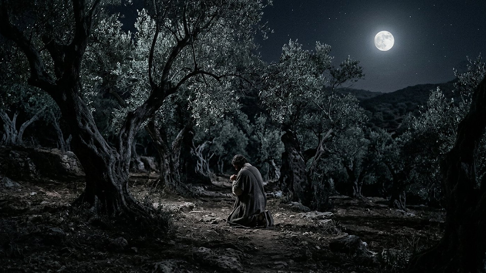
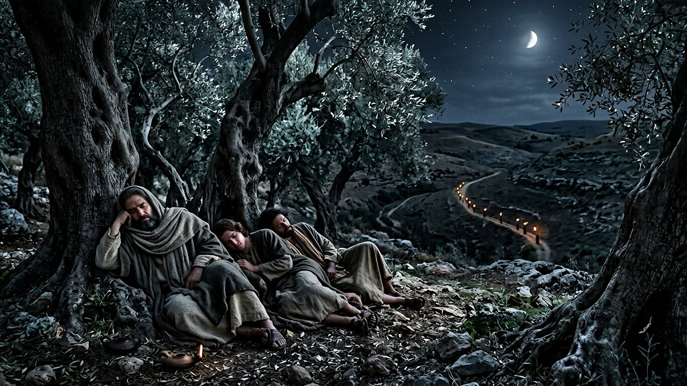
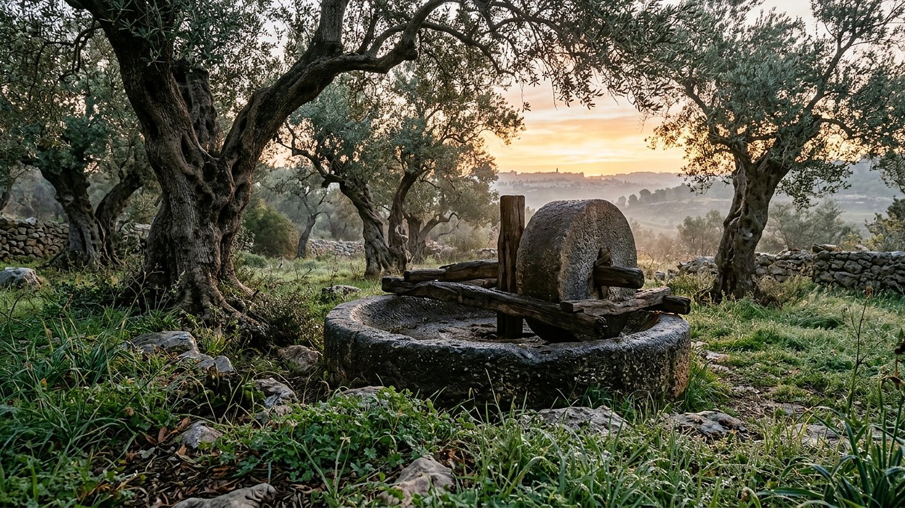

Salle 54 — Matthieu 26 ; Jean 18 ACCOMPLIE
Gethsémané : la nuit de la décision
« Mon Père, s'il est possible, que cette coupe passe loin de moi ! Toutefois, non pas comme je veux, mais comme tu veux. » — Matthieu 26:39 (d'après Segond 1910)
Reconstitution numérique — la prière au jardin : l'homme est vu de dos, visage caché, sans auréole ni portrait, comme dans tout ce musée.
Un pressoir à huile pour une nuit de presse
Après le dernier repas pascal, Jésus franchit de nuit le torrent du Cédron (en grec, translittération : Kedrṓn) et entre dans un jardin du mont des Oliviers nommé Gethsémané (translittération de l'araméen : Gat-Šmānê, « pressoir à huile »). Là, il prend à part Pierre, Jacques et Jean (translittérations : Pétros, Iákōbos, Iōánnēs), confie — « mon âme est triste jusqu'à la mort » — puis s'éloigne d'un jet de Pierre et prie à trois reprises : que la coupe passe, si c'est possible ; sinon, que la volonté du Père se fasse. Trois fois, il retrouve les disciples endormis. Puis la vallée s'éclaire de torches : Judas (translittération : Ioúdas) paraît avec une troupe armée, le signal convenu est un baiser, une épée blesse un serviteur que Jésus fait taire, et les disciples s'enfuient — lui se laisse conduire, refusant les « plus de douze légions d'anges » qu'il dit pouvoir demander (Matthieu 26:36-56 ; Jean 18:1-11, résumé sobre). Aucune violence n'est illustrée dans cette salle : l'arrestation n'y est présente que par les torches au loin.
Dans la lecture retenue par ce musée, Gethsémané est le pendant nocturne de l'onction de Béthanie (salle 53) : Marie y avait oint d'avance le corps pour la sépulture ; ici, l'homme lui-même consent, en pleine connaissance, à la mort annoncée — en demandant d'abord, trois fois, si une autre voie existe. C'est aussi la réponse vivante à l'accusation du livre de Job (salle 48) : une fidélité qui ne tient ni à l'ignorance ni au bénéfice, mais à un choix renouvelé sous la pleine lune de la Pâque.
Le récit en cinq temps
De l'entrée au jardin aux torches dans la vallée, avancez d'une station à l'autre.

Le banc des preuves : de très vieux arbres, une science récente
DÉBATTU
Les oliviers de Gethsémané au carbone 14 : vénérables, mais pas de l'époque (EV-63)
Le jardin traditionnel de Gethsémané, au pied du mont des Oliviers, garde huit oliviers monumentaux aux troncs creux et noueux, souvent présentés comme des témoins de la nuit de l'arrestation. Une étude scientifique publiée au début des années 2010 a daté au radiocarbone les parties les plus anciennes de leurs racines : elles remontent au XIIe siècle environ, à l'époque des croisades ; les analyses d'ADN montrent en outre que les arbres partagent le même profil génétique, comme s'ils descendaient de boutures d'un même ancêtre. Vérifié : ce ne sont pas des arbres du Ier siècle. Débattu : la localisation exacte du jardin évangélique — jardin actuel, grotte voisine ou verger plus large —, que la tradition a fixée progressivement.
DÉBATTU
« Sa sueur devint comme des gouttes de sang » : un verset discuté
Luc ajoute à la prière un détail célèbre : « sa sueur devint comme de grosses gouttes de sang qui tombaient à terre » (Luc 22:44, d'après Segond 1910). Les versets 43 et 44 de ce chapitre manquent dans plusieurs manuscrits anciens importants et sont présents dans d'autres : les spécialistes débattent de leur place dans le texte primitif, et les médecins discutent le phénomène décrit (sueur sanguine sous stress extrême). La salle signale ce double débat au lieu de transformer le détail en effet spécial.
LECTURE PROPHÉTIQUE
« Frappez le berger, et les brebis seront dispersées »
En route vers le jardin, Jésus avait cité le prophète Zacharie (translittération : Zĕkaryāh) : « je frapperai le berger, et les brebis du troupeau seront dispersées » (Matthieu 26:31 ; Zacharie 13:7). La nuit vérifie la parole à la lettre : un signe convenu, une troupe, une fuite générale — et, fait notable, aucun appel à la résistance armée. Dans la lecture du musée, Gethsémané relie les annonces anciennes à la rançon de la salle 44, dont le prix est consenti ici avant d'être payé le lendemain.
Quatre clés pour bien lire la nuit de Gethsémané
1. Une coupe demandée, puis acceptée
La prière n'est pas une résignation en une phrase : elle revient trois fois, avec la même condition — « si c'est possible » — et la même conclusion. Entre les deux, tout l'écart de la liberté : l'homme peut souhaiter une autre issue, la dire à voix haute, et choisir quand même la voie annoncée. Gethsémané est, dans ce musée, la scène où la prescience rencontre le consentement le plus documenté de l'Évangile.
2. Le sommeil des amis, sans condamnation sommaire
Pierre, Jacques et Jean s'endorment trois fois, la nuit même où Pierre a promis de mourir plutôt que de renier. Jésus les réveille sans les accabler : « l'esprit est bien disposé, mais la chair est faible » (26:41). Le contraste n'écrase pas les disciples ; il mesure la solitude de celui qui veille seul — et prépare leurs chutes et leurs relèvements racontés plus tard, jusqu'à la Pentecôte (salle 45).
3. Le baiser, signe retourné
Le signal de l'arrestation est un geste d'amitié — « celui que j'embrasserai, c'est lui » (26:48) — et la réponse de Jésus, dans la version de Luc, est une question plutôt qu'un reproche : « Judas, c'est par un baiser que tu livres le Fils de l'homme ! » Aucune image de cette salle ne montre la troupe de près : le musée laisse la trahison à la distance des torches, là où le récit met l'accent, sur la non-violence de l'arrêté.
4. Douze légions refusées
À l'épée tirée par un disciple — Jean nomme Pierre, et le blessé s'appelle Malchus (translittération : Málchos) — Jésus répond par le refus de la riposte : remettre l'épée à sa place, car il pourrait demander « plus de douze légions d'anges » et ne le fait pas, « comment alors s'accompliraient les Écritures ? » (26:52-54). La puissance disponible et renoncée est la clé politique de la scène : ce royaume-là ne se défend pas comme les autres (salle 40).
Prescience n'est pas fatalité — trois prières avant le oui
La nuit de Gethsémané aurait pu être écrite comme un mécanisme : tout est annoncé, tout arrive. Le récit la raconte au contraire comme une délibération : une coupe qu'on demande à écarter, des amis qu'on réveille, une troupe qu'on pourrait disperser d'un mot. La prescience connaît l'issue ; elle ne remplace pas le choix — ici, elle le laisse prier trois fois.

Salle 53 : l'onction qui préparait la sépulture · Salle 44 : le prix consenti ici, payé le lendemain · Salle 48 : Job, l'autre fidélité éprouvée de nuit
Écouter la salle
Transcription de la narration
Bienvenue dans cette nouvelle salle. Vous verrez d'abord une oliveraie ancienne sous la pleine lune, une silhouette agenouillée entre les troncs noueux, puis, au loin dans la vallée, une ligne de petites flammes qui approchent dans la nuit. Bonne visite. La visite avance en cinq étapes courtes. Prenez le temps d'observer chaque image et de lire les panneaux : ils présentent une nuit de décision, de très vieux oliviers étudiés par les scientifiques, et les questions des spécialistes. Merci de votre attention.